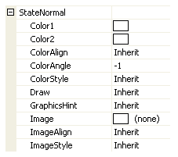
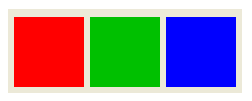
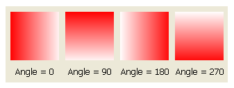
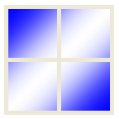
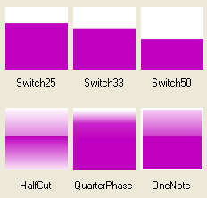
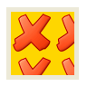
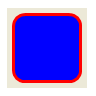
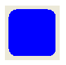
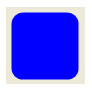

Background
Most of the Krypton controls draw a background and so provide a set of properties that allow customization of the background appearance. Each control will provide the same set of properties for this task and so once you are familiar with how they operate you can use this knowledge when dealing with any of the controls. Figure 1 shows the standard set of properties from the KryptonPanel control.

Figure 1 –Background display properties
Color Properties
The ColorStyle property determines how to make use of the Color1, Color2, ColorAlign and ColorAngle set properties. When ColorStyle is defined as Solid the background will be drawn using the Color1 value and the other color properties are ignored as not relevant. Figure 2 shows some KryptonPanel instances with Solid defined.

Figure 2 – ColorStyle = Solid
All other ColorStyle values such as Linear and Rounded allow a gradient effect between two colors, where Color1 is the starting color and Color2 is the ending color. Now the ColorAngle property becomes important as it determines the direction in which the transition occurs. Figure 3 shows the same Linear style applied with different angles.

Figure 3 – ColorStyle = Linear
ColorAlign is used to decide how to calculate the starting and ending points for the gradient effect. By default it will always start at the top left of the control and ends at the bottom right of the control which gives appearance as seen already in figure 3. If instead you choose the Form level alignment then it will use the top left of the enclosing form and bottom right of the enclosing form as the total area of the gradient. Figure 4 shows four panel controls all with exactly the same ColorAngle of 45 degrees, ColorAlign of Form and ColorStyle of Sigma.

Figure 4 – ColorStyle =Sigma, ColorAlign = Form, ColorAngle = 45
Figure 5 shows a selection of other ColorStyle values not yet demonstrated. There are many other style options that you can explore in order to achieve the exact look and feel you need. Try using the ones beginning with Glass to achieve an effect similar to that of Office 2007.

Figure 5 - Selection of some other ColorStyle options
Image Properties
The image is always drawn after the color has been drawn. This ensures that any alpha channel in the image will show through with the correct back color. Providing an Image is optional and the related ImageAlign and ImageEffect are only used when an Image has been specified. Figure 6 shows a KryptonPanel with an Image of a red cross with an alpha channel so that the Color1 value of Gold shows through the transparent areas.

Figure 6 – Color1 = Gold, Image contains alpha channel
The ImageAlign property allows the image to be draw aligned against the Form and not just the control instance. Figure 7 shows the use of four KryptonPanel controls that are all assigned the same Image, ImageAlign and ImageEffect.
Figure 7 – ImageAlign = Form, ImageEffect = Stretch
The ImageEffect property describes how to draw the Image over the required area. Figure 6 shows the example where Stretch is used to ensure the Image exactly covers the entire area. Tiling options include Tile, TileFlipX, TileFlipY and TileFlipXY that repeat over and over again until the entire area is filled. Positioning options such as TopLeft and BottomMiddle allow the image to be placed relative to both the vertical and horizontal edges.
Other Properties
Draw is used to determine if the background of the control should be drawn at all. If you set this to be False then no background drawing will take place and so the control becomes transparent, instead showing through the container that parents the control.
GraphicsHint is more specialized and used to describe the level of quality used when drawing the background. This is generally only needed if you are using a Krypton control that has a border as well as a background and where the border itself is not being drawn but does provide rounding. For example, figure 8 shows a KryptonGroup that has a solid blue background and a rounded thick border of red.

Figure 8 – KryptonGroup with rounded border
If we decide to remove the border because we only want the background to be visible but we still want the rounding effect then we set the borders Draw property to be false and the result can be seen in figure 9.

Figure 9 – Rounded border removed
In figure 8 you can see that the rounded edges are of a poor quality. This is where the GraphicsHint property is used to improve the smoothness of the drawing by setting the AntiAlias value. Figure 10 shows the result of changing the property.

Figure 10 – GraphicsHint = AntiAlias